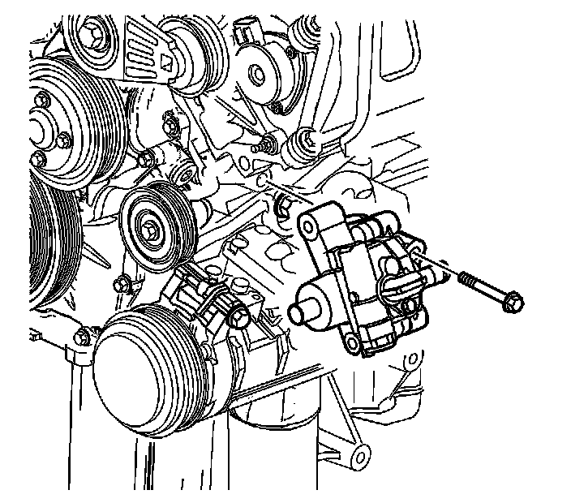
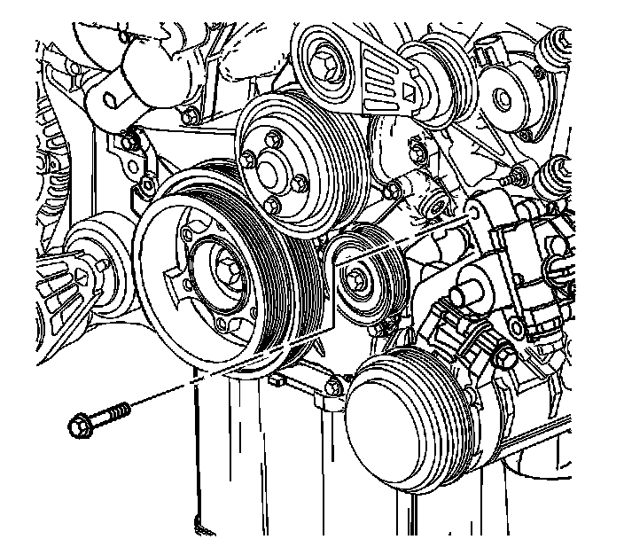
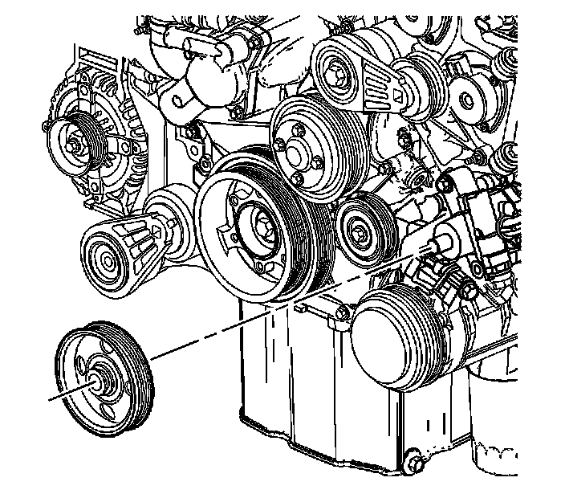
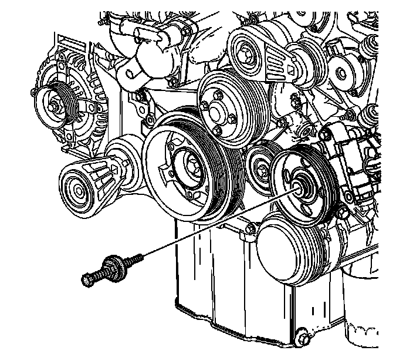
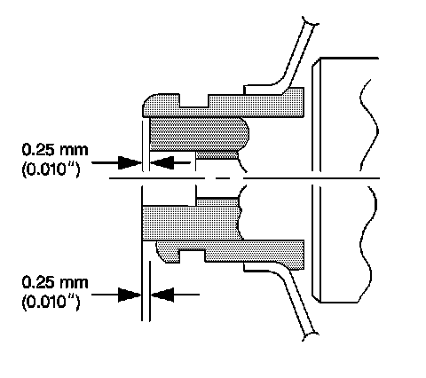

137. Power Steering Pump Installation
Power Steering Pump Installation
Tools Required
J 25033-C Pulley Installer

1. Place the power steering pump in position to the engine.
Notice: Refer to Fastener Notice (Fastener Notice) .
2. Loosely install the power steering pump side bolt.

3. Loosely install the power steering pump front bolt.
4. Tighten the power steering pump bolts.
Tighten the power steering pump bolts to 50 N.m (37 lb ft).

5. If removed, place power steering pulley in position to the power steering pump.

6. Install the J 25033-C into the threads of the power steering pump shaft. Ensure the J 25033-C threads completely into the shaft of the power steering pump before the pressing components of the J 25033-C contact the power steering pulley.

7. Tighten the nut on the J 25033-C until the hub of the power steering pulley is flush with the end of the power steering pump shaft.
8. Remove the J 25033-C .